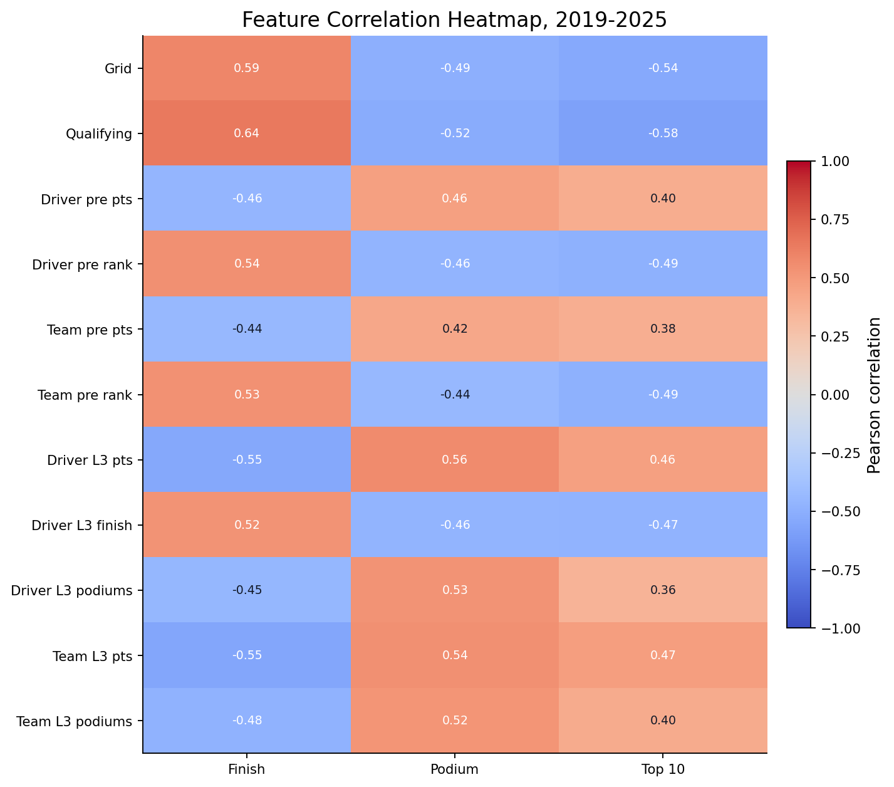
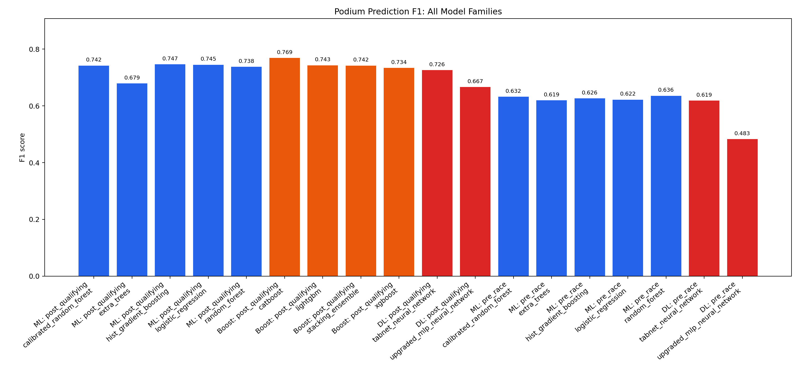
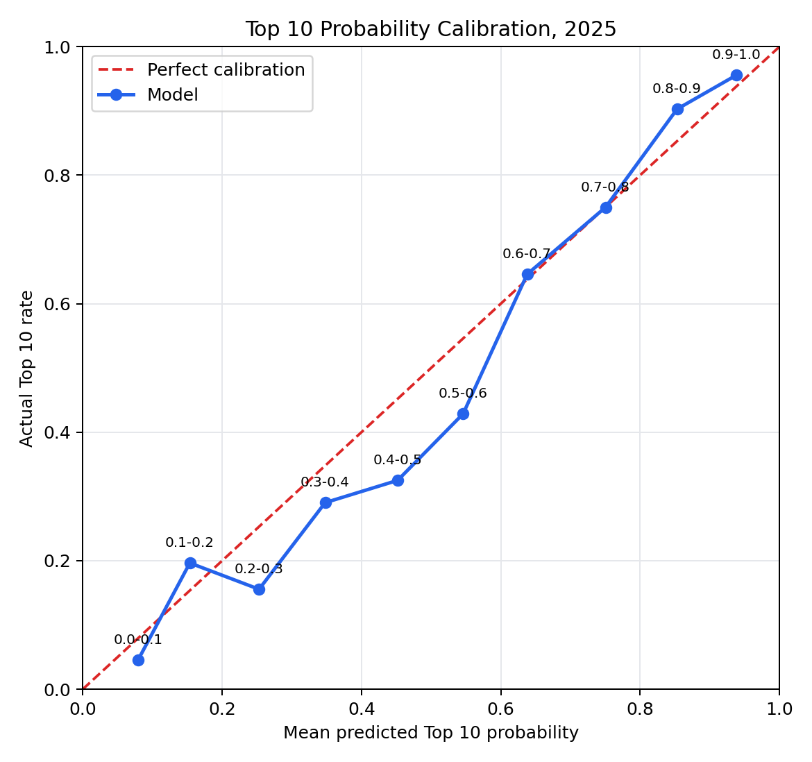
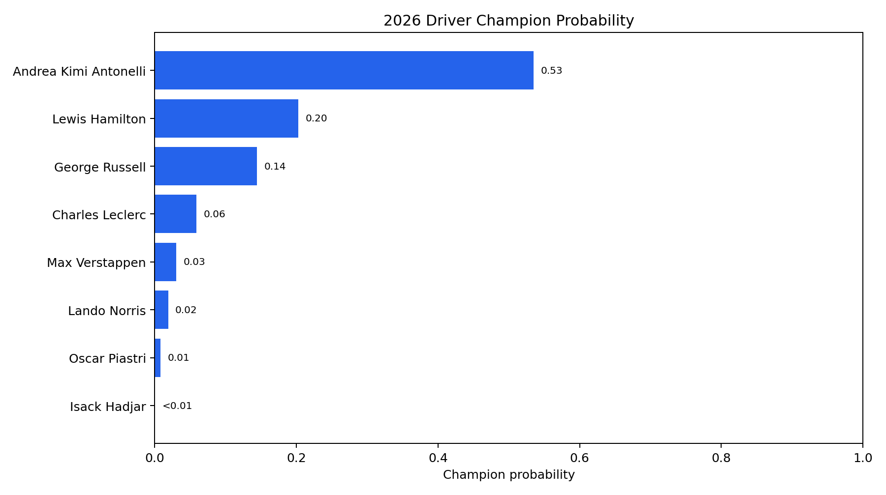
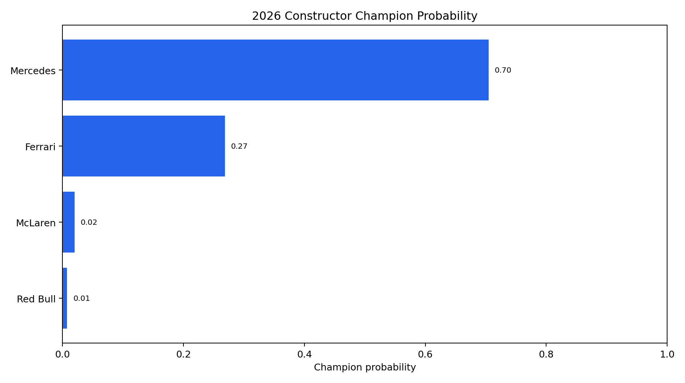
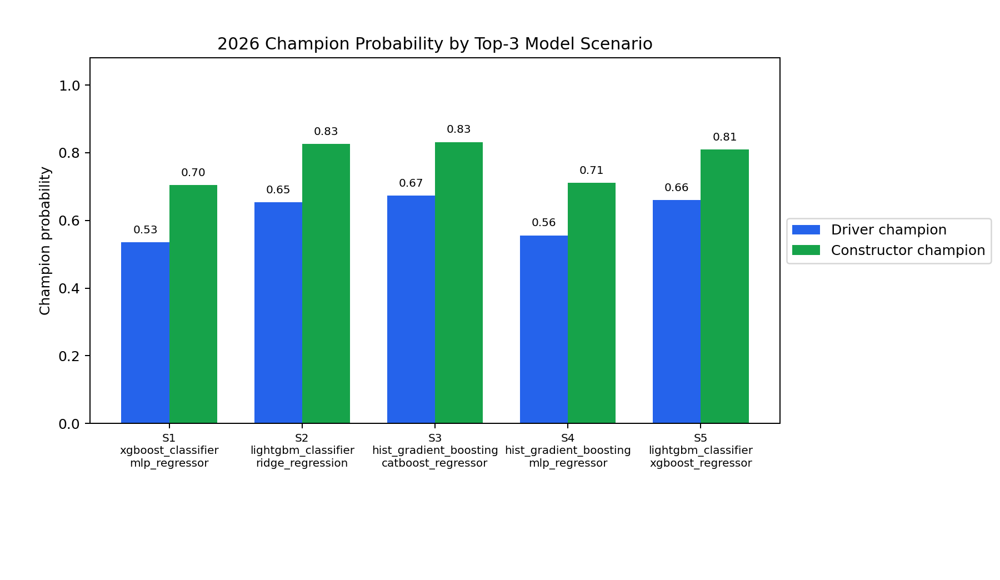

项目详情
Formula 1 Data Analysis and Prediction
维护者项目介绍
Formula 1 Data Analysis and Prediction 是一个可复现的端到端流程，用于历史分析和 2026 赛季冠军预测。项目完成比赛数据采集与校验，构建分析与建模数据表，分析车手、车队和赛道特征，比较领奖台、前十名和比赛积分预测模型，进行概率校准，并通过回测与模拟生成车手和车队冠军预测。静态历史图表覆盖 2019–2025 年，最终预测使用当前 2026 赛季状态。
截图





